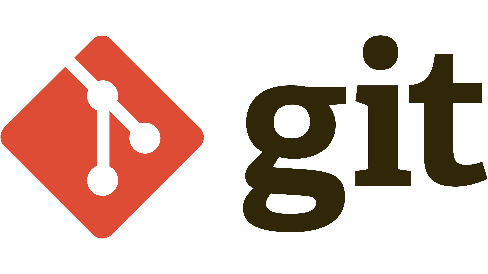

DevOps
Table of Contents
Data Formats
We need a standard format to allow a diverse set of software to communicate with each other, and for humans to interface with it. All of the data formats that we’ll discuss in this chapter have broad support over a multitude of languages and operating systems.
- XML - machine to machine
- JSON - machine to machine
- YAML – human to machine
XML
XML is a markup language that defines a set of rules for encoding documents in a format that is both human-readable and machine-readable. The design goals of XML emphasize simplicity, generality, and usability across the Internet.
Features
- XML files end in
.xml - Root, children nodes, attributes
- Namespaces (Used to resolve naming conflicts)

Benefits
- Support inter-business transactions
- Maintain data integrity
- Verify data accuracy
- Automatically customize data presentation for different users
- Store data consistently across multiple platforms
- Improve search efficiency
- Design flexible applications
JSON
JSON (JavaScript Object Notation) is a lightweight data-interchange format. It is easy for humans to read and write. It is easy for machines to parse and generate.
Features
- JSON files end in
.json - The whole thing is wrapped in curly braces {}. This is very common, and it indicates that JSON objects are contained inside
- Think of “objects” as key-value pairs, or dictionaries
- JSON objects always use string values when describing the keys
- JSON list indicated by the square brackets []
- Data Types:
- Number
- String
- Boolean
- Array
- Object
- Null

Working with JSON in Python
- JSON enjoys wide support across a myriad of languages
- You will often be able to simply import a JSON data structure into constructs of a given language, simply with a one-line command
import json
item = {
"name": "egg",
"price": 0.99,
}
with open('data.json', 'w') as f:
json.dump(item, f) # write python object to json file
with open('data.json', 'r') as f:
data = json.load(f) # load json data into python object
print(data) # {'name': 'egg', 'price': 0.99}
YAML
YAML (YAML Ain't Markup Language) is a human-readable data serialization language. It is commonly used for configuration files, automation workflow, or providing a data set to work with.
Features
- YAML files end in
.yamlor.yml - YAML is a superset of JSON
- YAML is a human-readable data serialization language
- YAML is a strict indentation language
- YAML is case sensitive

Working with YAML in Python
import yaml
item = {
"name": "egg",
"price": 0.99,
}
with open('data.yaml', 'w') as f:
yaml.dump(item, f) # write python object to yaml file
with open('data.yaml', 'r') as f:
data = yaml.load(f, Loader=yaml.FullLoader) # load yaml data into python object
print(data) # {'name': 'egg', 'price': 0.99}
Note: The yaml module is not part of the standard library, so you’ll need to install it first. You can do so with pip:
pip install pyyaml
Git

Source code management systems are essential for any software development project. They allow you to keep track of your software at the source level. You can track changes, revert to previous stages, and work on different branches at the same time. Code is organized within a repository.
Setting Up Git
git config --global user.name <name> # Set user name
git config --global user.email <email> # Set user email
Commit
- Specific snapshot within the development tree.
- Collection of changes applied to a project's files.
- Metadata about the change.
- Identified by a unique
SHA-1 Hash.
git commit -m "Add new feature" # Commit changes
git show 5b8e4f # Show commit details
Tag
- Represents a single commit.
- Often human-friendly.
- Version number.
git tag v1.0.0 # Create a tag
git tag # List all tags
git show v1.0.0 # Show tag details
Branch
- A history of successive changes to code.
- A new branch may be created at any time, from any existing commit.
- May represent versions of code.
git branch # List all branches
git branch feature/add-btn # Create a new branch
git checkout feature/add-btn # Switch to a branch
git checkout -b feature/add-btn # Create and switch to a branch

Terminology
- Working Files: Files that are currently on your file system.
- Staging Area: Files that are ready to be committed. Only files that have been staged will be committed.
- Checkout: Replace the current directory files with those from a specific branch or commit.

Distributed Version Control System
- Clone: Creates a full copy of repository on your local machine.
- Fetch: Update your local repository with changes from non-local repositories (i.e. GitHub).
- Fork: Create a copy of a repository in a remote location (i.e. GitHub).
git clone https://github.com/username/repo.git # Clone a repository
git fetch origin # Fetch changes from remote repository
Setting Up A Repository
- Create a new repository from cero on the command line
git init # Initialize a new repository
git remote add origin https://github.com/username/repo.git # Add a remote repository
- Clone an existing repository
git clone https://github.com/username/repo.git # Clone a repository
cd repo # Change directory to the repository
Inspecting A Repository
- git diff: Show changes between commits, commit and working tree, etc.
- git status: Display the state of the working directory and the staging area.
- git blame: Examine the history of a file and get context as to who made changes and when.
- git log: Show commit logs.
git diff ./file.txt # Show changes between commits, commit and working tree, etc.
git status # Display the state of the working directory and the staging area
git blame ./file.txt # Examine the history of a file
git log # Show commit logs

Undoing Commits And Changes
- git revert: Create a new commit that undoes the changes from a previous commit.
- git commit --amend: Change the last commit.
- git reset --soft: Only resets the HEAD to the commit you specified.
- git reset --mixed: Resets the HEAD to the commit you specified and resets the staging area.
- git reset --hard: Resets the HEAD to the commit you specified and resets the staging area and working directory.
git revert 5b8e4f # Create a new commit that undoes the changes from a previous commit
git commit --amend # Change the last commit
git reset --soft 5b8e4f # Only resets the HEAD to the commit you specified
git reset --mixed 5b8e4f # Resets the HEAD to the commit you specified and resets the staging area
git reset --hard 5b8e4f # Resets the HEAD to the commit you specified and resets the staging area and working directory
Pull Requests
Pull requests are a mechanism for a developer to notify team members that they have completed a feature. Once their feature branch is ready, the developer files a pull request via their SCM (Source Control Management) system. This allows team members to review the changes and discuss any potential modifications.

Merge
A merge is the act of integrating the changes from one branch or commit into a second branch. The result is a new commit that is a combination of the two. If a merge fails, git will notify you with a merge conflict. Merge conflixts must be fixed manually, and then added and committed.
NOTE: Merge conflicts occur when two branches have changed the same part of the same file, and then those branches are merged together. Git will not be able to automatically determine what the correct content should be or if both changes should be included, so you must inspect and resolve the conflict manually.
git merge feature/add-btn # Merge a branch into the current branch
Branch Workflow
Feature branching is a git workflow that allows multiple developers to work on a particular feature in isolation. Each feature is developed in a dedicated branch, and once it is ready, it is merged into the main branch.

Virtualization

Hardware Virtualization
- Abstract underlying physical hardware from operating systems and applications.
- Allows multiple guest operating systems to run in parallel.
- Physical resources are shared among all guest OS and virtualization software.
Terminology
- Host OS/Host Machine: Physical hardware/server.
- Hypervisor: The virtualization software, acts as the true OS for the server.
- Guest OS/Virtual Machines: Instances of the virtualized OS, running in emulated environments. Guest thinks it’s running on real hardware.
Advantages
- Sandbox: Isolated from the host OS.
- Networked: Access over the network.
- Portable: Run on any host OS.
- Snapshots: Saved and restored to previous states.